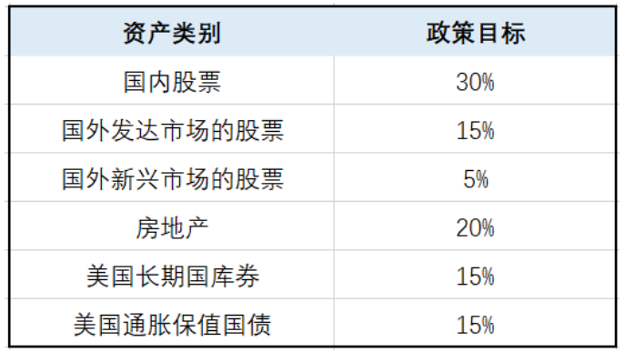

基金
基金投资风险分类
尽管基金本身有一定的风险防御能力，但对证券市场的整体系统性风险也难以完全避免。除此之外，基金本身也会遇到个体的非系统性风险。
基金的分类
基金的系统性风险
基金的系统性风险一共包括五大类，分别是：政策风险、经济周期风险、利率风险、通货膨胀风险、以及流动性风险。
政策风险
经济周期风险
指随着经济运行的周期性变化，证券市场的收益水平呈周期性变化，基金投资的收益水平也会随之变化。
案例：2008的金融海啸
利率风险
通胀风险
流动性风险
基金投资组合中的股票和债券会因各种原因面临较高的流动性风险，使证券交易的执行难度提高，买入成本或变现成本增加。
案例：2016年初的股市熔断事件
基金的非系统性风险
基金的非系统性风险也包括五大类，分别是：上市公司经营风险、操作风险和技术风险、管理和运作风险、基金未知价的风险、以及信用风险。
上市公司经营风险
如果基金公司所投资的上市公司经营不善，其股票价格可能下跌，或者能够用于分配的利润减少，使基金投资收益下降。
案例：乐视网
操作风险和技术风险
管理和运作风险
基金未知价的风险
信用风险
基金在交易过程中可能发生交收违约或者所投资债券的发行人违约、拒绝支付到期本息等情况，从而导致基金资产损失。
案例：康得新债务违约
系统风险如何规避
耶鲁财神的方法
为了有效应对股票市场的系统性风险，有“耶鲁财神”之称的传奇人物、耶鲁大学捐赠基金管理人大卫·斯文森，建议投资者通过不同核心资产按照相应比例进行资产配置，并在季度、半年度、年度进行动态再平衡。 
格雷厄姆谈规避风险
我们曾建议投资者将其资金分配于高等级债券和蓝筹股上，其中，债券所占的比例不低于25%，且不高于75%，而股票的比例则与之相适应。最简单的选择是，两者各占一半，并根据市场的情况的变化进行小幅（比如5%）的调整。
另一种策略是，当感觉市场已处于危险的高位时 ，将股票持有比例减少到25%；并在他感觉到股价的下跌已使其吸引力与日俱增时，将持股量提升到最大限度，即75%的比例。
非系统风险如何规避
单只基金的风险，不同行业或种类的基金组合来分散。
基金风险总结
- 1、基金投资的风险：系统性风险和非系统性风险。
- 2、系统性风险：市场整体的风险，不同核心资产的投资组合来分 散。
- 3、非系统性风险：单只基金的风险，不同行业或种类的基金组合 来分散。
货币型
利率歧视
20世纪的70年代初到80年代，美国处在经济衰退而通胀较高的“滞涨”环境中。当时美联储对银行存款利率进行管制，银行为了吸引资金，推出利率高于通胀率的大额定期存单，往往是以十万或百万美元为最低投资单位只有少数机构投资者才有足够的现金去做这样的投资。
第一支货币基金的诞生
当时最大的养老基金“教师年金保险公司”现金管理部主管鲁斯·班特萌生了一个天才想法：在保持高流动性的条件下，让小额投资者在金融市场上享有大额投资者才能获得的回报率。第一支名为“储备基金”的货币基金由此应运而生。
美国货币基金的发展
由于货基的收益大幅超越银行储蓄存款，货基在20世纪70年代末到20世纪80年代迎来大发展时代。货基从1977年的不足40亿美元跃升到1982年的2400亿美元，增量超过同期股票和债券市场总和。截至2013年末，美国货基总量和银行存款总量的比值约为23%。
中国货币基金的发展
我国第一只货币市场基金产品是2003年10月成立的华安现金富利；真正让货币基金进入大发展的是成立于2013年5月的余额宝（天弘基金），由于互联网金融的崛起，中国货币基金规模空前扩张，截止17年6月，货币基资产净值达到5.3万亿元，占基金市场规模的比重超过50%。
货币基金的投资领域
货币基金资产主要投资于短期货币工具（一般期限在一年以内，平均期限120天），如国债、央行票据、商业票据、银行定期存单、政府短期债券、企业债券（信用等级较高）、同业存款等短期有价证券。上述这些货币市场基金投资的范围都是一些高安全系数和稳定收益的品种。
如何衡量货基收益
当我们打开支付宝-基金排行的时候，有两个表示收益的选项：万份收益和七日年化。其中支付宝中默认按照七日年化降序排列，但是我们会发现有的“七日年化”高而“万分收益”低，这个如何破解？
何为“万份收益”？
万份收益是对货币基金收益的一个指标，通俗的说就是一万份一天可以收多少钱。一份是一块钱，那一万份，就是一万块钱。所以该基金3月12日的1.0921的意思是，买一万块钱该基金，一天（3月12日）有1.0921元收益的意思
何为“七日年化”？
七日年化收益率是指货币基金最近7日的平均收益水平，进行年化以后得出的数据。比如3月12日该基金七日年化收益率是3.6030%，是指3月6日-3月12日这七天的平均年化收益率为3.6030%。
累计回报
万分收益和七日年化都是短期的、变化的收益指标，在选择收益时更应该参考的是货基的累计回报指标。在支付宝具体货基页面的下方就会显示该基金最近一周/一月/一年等累计回报情况以及同类排名，这才是真实的收益。
必须掌握的货基投资技巧
1、读懂基金名称中的奥秘
基金名称由三个部分组成：公司名称、基金特点、投资范围。例如：红土创新优淳货币A，其中红土——红土创新基金管理有限公司；创新优淳——基金特点，主要用于宣传；货币A——说明这个基金只能是货币基金，不能投资股票等资产。
2.货币基金后缀A、B
两者的主要区别在于投资门槛，一般A级基金的起投金额为100元，B级的起投金额在百万元以上。从收益上看，B级收益要高于A级一些，这就是利率歧视，因此我们在选择的时候尽量选后面不带A、B的货币基金。
3、查看基金档案
通过基金档案查看成立日期和资产规模。货币市场基金越老越吃香，老基金一般运作较为成熟，持有的高收益率品种较多。另外，尽量选择规模相对较大的货基，不易受大额申赎影响。
4、注意投资时机
货币基金一般在“钱荒”时收益率会飙升，因此流动性不足的时候就是货基的投资良机。通常在季度末、央行收缩银根或者股市、债市低迷的时候这三种情况下适合投资。
5、周五不申购、周四不赎回
当日15点前购买，当天可确认，下一个工作日开始计息；在15点以后购买，则到第二天才可以确认份额，第三天开始计算收益。以国庆节为例，如果你在9月29日15点后买入，则需要在9月30日确认份额，到10月8日才开始计算收益，就浪费了国庆七天的假期收益。周末及其他节假日同理。
债券型
什么是债券
债券发行的时候，发行人给你一张凭证，这张凭证就是债券，上面写上了债券发行人向你借了多少钱，借钱时间多久，利率多少，等到了时间你可以用这个凭证拿回本金和利息。因为债券本身约定的利息不变，所以在降息周期，经济低迷的时候债券会走牛。
债券的分类
债券按照发行主体分为利率债和信用债。
按照债券期限可分为短债(一年以内)、中债(1-3年)和长债(3年以上)。
还有一种特殊的债叫可转债。
利率债和信用债区别：主要是发行人不同。当然前者风险偏低，后者风险高。
- 利率债：国债、央票、地方政府债、金融债（政策性银行债）
- 信用债：企业债、 短期融资券、中期票据、（非政策性银行债）
短期债显然也比中长期债的风险要低。风险最高的当属可转债。
债券基金
持仓品种80%以上是债券的基金就是债券基金。市场上比较常见的债券基金有两种，纯债基金和偏债基金。纯债基金是持仓全部买入债券的基金，又分为短期纯债基金和长期纯债基金；偏债基金是指重仓买入债券，轻仓买入股票的基金，也称混合债基。另外，大部分持有可转债的基金就称为可转债基金。
时间期限
- 短债基金 投资1年以内的债券 低
- 长债基金 投资1年以上的债券 中低
投资范围
- 纯债基金 只投资债券 低
- 偏债基金 既投资债券又投资股票 中低
债券品种
- 利率债基金 投资国债、地方政府债、央票等 低
- 信用债基金 投资其他发行机构发行的债券 中低
特殊品种
- 可转债基金 兼具债券和股票特点 中
支付宝推荐的基金
在支付宝-基金-稳健债基中有债基推荐，其中左图中显示“权威大奖收割基——招商产业债券A”，通过点击即可进入详细介绍界面，分别列举：近一年的涨幅、近一年获得的奖项以及基金经理的个人履历
通过支付宝查询该基金的详细内容发现：在基金类型区域——只显示债券型，无法明确是纯债型还是偏债型；其次，进入基金档案，查询持仓，仅显示资产配置比例，不显示具体持有债券的类型，具体持有的是利率债还是金融债，抑或是可转债不得而知。
分析工具－好买基金APP
通过好买基金APP查询该基金的详细内容发现：在基金类型区域——会显示该基金属于偏债型基金；其次，进入基金档案，查询持仓，会显示转债和非转债的比例，还会显示债券中的具体成分。
债基分析三步走
- 第一步：查看债基类型，分清纯债基金还是偏债基金；
- 第二步：查看资产配置，确定不同资产的持仓比例；
- 第三步：查看债券成分和股票成分，确定不同的债券类型以及股票的行业分布。
挑选优质债基的方法
第一步：筛选高收益
天天基金网——基金排行——开放基金排行——债券型——长期纯债——近3年/2年/1年累计回报降序排列均排进前30名基金
第二步：查看基金品质
进入“基金品种”页面，剔除：
- 1、基金经理三年内有变动
- 2、暂无评级的基金
- 3、小公司的基金
第三步：选取费率低的
进入“基金品种”页面，点击“费率详情”，选取综合费率较低的债基。
纯债基金的投资技巧
1、债基的反向标
债券市场的表现主要与市场利率相关，越是长期的债券基金，受利率影响越大一些，相比短期债券基金来说，长期债券基金在牛熊市中的波动也更大。
如果市场利率上涨，那么原来持有的债券收益率相对就下降了，债券是吸引力下降，会被抛售，债券价格下跌，直到价格有足够吸引力，达到平衡，反之亦然。
2、如何判断市场的利率高低
我们可以参考十年期国债到期收益率，在国债收益率单边下跌的年度，中证全债年度收益较高；国债收益率单边上涨年度，中证全债年度收益率较低或者为负，并且有明显的均值回归特点，所以当国债收益率比较高，大概率会下行的时候，可以配置债券，而当国债收益率比较低，大概率会上行时，可以考虑卖出
3、国债收益率具体参考值
- 1、当十年期国债利率在3.5%以上，通常是利率的高位，未来有下行压力，投资中长期债券基金。
- 2、当十年期国债利率在3.5%至3.0%之间时，属于利率低位，则适合投资短债基金。
- 3、十年期国债利率低于3%时，应该减配债券类基金，因为此时配置债券基金的风险收益比已经很低了。
债券型基金总结
- 1、持仓品种80%以上是债券的基金就是债券基金。市场上比较常见的债券基金有两种，纯债基金和偏债基金。
- 2、债券市场的表现主要与市场利率相关，越是长期的债券基金，受利率影响越大一些。
- 3、当国债收益率比较高，大概率会下行的时候，可以配置债券，而当国债收益率比较低，大概率会上行时，可以考虑卖出。
混合型
混合基金的设计原理
什么是混合型基金
混合基金是指同时投资于股票、债券和货币市场等工具，没有明确的投资方向的基金。其风险低于股票基金，预期收益则高于债券基金。它为投资者提供了一种在不同资产之间进行分散投资的工具。
投资组合理论
马柯威茨有关证券组合理论的中心观点是，认为投资者的投资愿望是追求高的预期收益，并尽可能地规避风险。因此，对于一种证券组合，不仅要重视预期收益，而且也要考虑所包含的风险。马柯威茨的证券组合理论回答了，在既定风险水平的基础上，如何使证券的可能预期收益率最大化；或为获得既定的预期收益率，如何使承担的风险最小化。
组合理论对基金的意义
- 1）投资组合理论关于分散投资的合理性的阐述为基金 管理业的存在提供了重要的理论依据。
- 2）马柯威茨提出的“有效投资组合”的概念，使基金经 理从过去一直关注于对单个证券的分析转向了对构建有效投 资组合的重视。
- 3）组合理论已被广泛应用到了投资组合中各主要资产 类型的最优配置的活动中，并被实践证明是行之有效的。
混合基金的分类
- 1）偏股型基金：股票比例50%-70%，债券比例在20%-40%
- 2）偏债型基金：与偏股型基金正好相反
- 3）平衡型基金：股票、债券比例比较平均
- 4）配置型基金：股债比例按市场状况进行调整
如何筛选平衡型基金
第一步：筛选
操作步骤： 天天基金网——基金筛选——搜索框输入“平衡”——查看更多搜索结果——点击展开更多
第二步 查看资质配置
操作步骤： 基金品种——基金规模——资产配置
第三步 注重评级
操作步骤：
- 1、基金评级
- 2、公司评级
- 3、基金经理评级
灵活配置型基金投资要点
- 1）资产配置要灵活变动，不局限于股票或债 券；
- 2）不单纯追求高收益，更要关注净值曲线的 波动性；
- 3）基金经理的稳定性和抗风险能力是重要参 考标准
混合型基金总结
- 1、混合基金是指同时投资于股票、债券和货币市场等工具，没有明确的投资方向的基金。
- 2、混合基金的理论基础是投资组合理论。
- 3、混合基金包括：偏股型基金、偏债型基金、平衡型基金和配置型基金。
股票型
筛选股票型基金的操作方法
第一步：筛选基金公司
操作步骤： 天天基金网——基金公司——选择 四星级以上基金公司——查看股票 型基金收益变动情况
第二步：筛选基金经理
操作步骤： 在 基金公司页面——基金经理—— 选择主要以股票型基金和混合型基 金为主的基金经理——进入基金品 种页面——查看基金经理评级
第三步：确定风格规模费率等
操作步骤： 基金品种——基金规模——基金投 资风格——点击查看费率 中小盘：10-20亿 大盘：20-100亿
股票型基金投资要点
- 1）确定股票型基金的投资风格；
- 2）大盘风格参考沪深300指数，中盘风格参考中证500指数，小盘可以参考创业板指。
- 3）对指数进行价值分析，在低估且具有安全边际时分批买入，在高估时分批卖出。
股票型基金总结
- 1、看排名选股票型基金，很容易陷入投机的误区，并在高位买入 被套；
- 2、基金三个重要的风险评估数据：最大回撤、波动率以及夏普比 率；
- 3、股票型基金需要先确定投资风格，然后根据对应的指数的估值 来判断买入机会。
三个风险数据早知道
1、最大回撤
最大回撤：净值最高到最低的幅度，描述任一投资者可能面临的的最大亏损。
一个基金产品用历史绝对收益衡量，它的初始认购者一直持有或许是赚钱的，但是在该基金表现最优异时候认购的投资者却不一定赚钱，还甚至有可能巨亏。
2、波动率
波动率是基金净值的波动程度，是对基金收益率不确定性的衡量，用于反映金融资产的风险水平。
波动率越高，金融资产价格的波动越剧烈，资产收益率的不确定性就越强；波动率越低，金融资产价格的波动越平缓，资产收益率的确定性就越强。
3、夏普比率
夏普比率反映了单位风险基金净值增长率超过无风险收益率的程度。如果夏普比率为正值，说明在衡量期内基金的平均净值增长率超过了无风险利率，在以同期银行存款利率作为无风险利率的情况下，说明投资基金比银行存款要好。
股票型基金总结
- 1、看排名选股票型基金，很容易陷入投机的误区，并在高位买入被套；
- 2、基金三个重要的风险评估数据：最大回撤、波动率以及夏普比率；
- 3、股票型基金需要先确定投资风格，然后根据对应的指数的估值来判断买入机会。
指数型
什么是指数
指数是一个选股规则，它的目的是按照某个规则挑选出一篮子股票，并反映这一篮子股票的平均价格走势。
说起来有些枯燥，但实际上我们在日常生活中也经常会接触到指数。例如一个班级的平均成绩。
谁开发的指数
指数也不是凭空产生的，开发指数的机构主要有两类：证券交易所和指数公司。
国内有三大指数系列。上海证券交易所（简称上交所）开发的上证系列指数，深圳证券交易所（简称深交所）开发的深证系列指数，以及中证指数有限公司开发的中证系列指数。
指数基金怎么来的
指数是一种选股规则，按照某个规则挑选出一篮子股票。如果有基金公司开发一个基金产品，也完全按照指数的选股规则去买入完全一样的一篮子股票，这就是指数基金了。
指数基金的优势
1、指数基金“长生不老”
美国最知名的指数是道琼斯指数，它诞生于一百多年前。最初道琼斯指数有20个成份股，从100点起步。结果100多年过去了，道琼斯指数从100点慢慢涨到了今天的近2万点。而最初的20个成份股，一家家先后衰落，到今天，存活的只有一家通用电气。
2、指数基金长期上涨
恒生指数是1964年诞生的，最初恒生指数点数是100点。到2017年6月初，恒生指数涨到了26 000点，在53年里上涨了200多倍。如果把恒生指数的股息考虑在内，恒生指数是67 338点，53年里上涨了600倍！
3、指数基金成本低
管理费是基金公司收入的主要来源。主动型基金一般会收取基金规模的1.5%作为管理费。指数基金的一个好处就是管理费率较低。国内指数基金的平均管理费率在0.69%左右。部分规模较大、运行时间较长的基金，管理费率会降到0.5%以下。
4、有效规避风险
- 第一类风险是个股黑天鹅风险。例如乳制品行业曾经遭遇过“三聚氰胺”事件。
- 第二类风险是本金永久损失的风险。例如股票退市。
- 第三类风险是制度风险。例如利益输送。
指数基金的投资要点
1、选择指数基金类型
防御型投资者以宽基指数基金为主，部分参与天生更容易赚钱的行业，不要参与周期型行业以及特色行业的基金。
进取型投资者在对行业进行深度分析的情况下可以参与部分行业指数基金。
指数基金最常见的一种分类，就是分为宽基指数和行业指数。
例如消费行业指数基金，就要求主要投资消费行业的公司，这种指数基金就是行业指数基金。
而像沪深300指数基金，它挑选股票的时候，并不限制行业，这种就是宽基指数基金。
2、选择指数基金的基本规则
- 1、基金规模越大越好，小于1亿的新基金别投。
- 2、收益误差越小越好，误差大就无法达到跟踪的目的。
- 3、费率越低越好，费率越低越有利于投资者。
3、如何买卖指数基金
- 1）当盈利收益率大于10%时，分批投资。
- 2）盈利收益率小于10%，但大于6.4%时，坚定持有已经买入的基金份额。
- 3）当盈利收益率小于6.4%时，分批卖出基金。
注：盈利收益率=1/市盈率
指数基金总结
- 1、指数基金具有长生不老、长期上涨、费用低廉、规避风险等优势，更适合普通投资者。
- 2、指数基金就是按照指数的选股规则和比例去买入完全一样的一篮子股票。
- 3、防御型投资者更适合宽基指数基金，进取型投资者在深入分析的情况下可以参与行业指数基金。